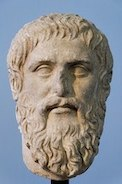

About

Keywords: science, analysis, logic, rationality
This is a blog about reason. Or in other words, optimal ways to see, think, and believe. Critical thought is a skill many people either don’t realize how strongly they need, or mistakenly assume their ability is much stronger than the average person.
Humans have a tendency to view the world through the biased lenses of politics, religion, and culture, that act as a distortion to reality. Unbiased perspectives are a skill many people believe they have, a result of Dunning-Kreuger type confidence. But sight and thinking are both trainable skills.
Trust in information is eroding to the point where there is nothing left. This is a reclamation of sorts, a practice in navigation.
The true pilot must of necessity pay attention to the seasons, the heavens, the stars, the winds, and everything proper to the craft if he is really to rule a ship. - Plato
This is a project in it’s early stages. An exercise in sharing ideas, similar to the process of journaling. I draw from lessons learned as a military analyst, data scientist, and red teamer.
Applied Critical Thinking, and Science Literacy.
About the Author
Reza Maakheru is a pen name, in order to create a degree of separation from my personal life. It’s not for personal glory or money, but to start a conversation about the scientific mind in a way that makes more sense than what we’re currently used to in America.
You can find me on Facebook for my real name, it’s not secret. To expand on before, I’m a former U.S. Military Analyst who served as part of the Global War on Terror in 2010. I have degrees in Intelligence Analysis, Mathematics, Statistics, and Philosophy. My most formative time was with the University of Foreign Military and Cultural Studies, where I trained in red-teaming, critical thinking, and asymmetric analysis.
Website Principles
1. Good Faith
A “sincere intention to be fair, open, and honest, regardless of the outcome of the interaction.”
There are a lot of blogs out there, with varying motives of existence, most of them revolve around money or getting a job. To separate myself from “ulterior motives” is something important to me, as it’s a key driver of misinformation.
My guiding philosophy is that our time on this earth is precious and finite. Mememnto Mori. None of us takes things after we die. No one will remember the video games we played, the parties we attended, the food we ate. The only thing that lasts is what we create, what we leave behind.
2. Free of Ego
My identity is not secret. All of us want to be recognized, but it’s not the core of my beliefs. My goal is to be the kind of person I needed when I was younger. A guide for the lost. The person I am is not as important as the message.
3. Free of Avarice
I have no monetization, but haven’t ruled out the possibility of finding something in the future, as long as it is a symbiotic, win-win type of thing, so never annoying popups or ads.
Avarice is a real problem in America right now… There’s both backlash and push. Like others, I am averse to it. There are some examples of this in a runaway effect: health care system and college education, to name a few. Economists call it the squeeze.
Frequenty Asked Questions:
What is Logos? History & Etymology
Logos is the greek word for word, reason, or plan. In a sense, it is all of these definitions together, a word that doesn’t exist in the English language. The closest is reason.
Logos is the source code that all of science seeks to uncover. Which is why you usually find the root word at the end of truth-seeking disciplines. Sociology, epidemiology, technology, ecology…
In the time of the ancient Greeks, this was elevated to the idea of a divine reason, transcending all religions. Absolute truths about the world are considered knowledge of the gods. This is the closest thing the predominantly skeptical Greek philosophers had to a unifying spiritual truth.
 In today’s time, there are many scientists, such as Carl Sagan and Neil Degrasse Tyson, who do have sacred beliefs. They have a spiritualistic idea of the “cosmos.” Everything that was, is and will be. Scientists look to it with a divine reverence, the closest thing they have to a religion. However, this cosmos is inherently chaotic. The logos is the guiding force, the word, reason, and plan, that gives the cosmos its form and meaning. The final truth that all scientists strive to get closer towards, with each experiment and each theory. Its divine reverence has been lost through the ages…
In today’s time, there are many scientists, such as Carl Sagan and Neil Degrasse Tyson, who do have sacred beliefs. They have a spiritualistic idea of the “cosmos.” Everything that was, is and will be. Scientists look to it with a divine reverence, the closest thing they have to a religion. However, this cosmos is inherently chaotic. The logos is the guiding force, the word, reason, and plan, that gives the cosmos its form and meaning. The final truth that all scientists strive to get closer towards, with each experiment and each theory. Its divine reverence has been lost through the ages…
Isn’t Logos a biblical concept? Why are you using a religious concept for a science website?
It’s both science and religious. Logos was central to Platonic philosophy, a set of ideas which predate the Bible by ~500 years. Plato was considered to be a divine figure in the Roman Empire. When the Bible was written, it drew heavy influences from Platonic Philosophy. The Book of John tied together Plato’s “Logos”, arguing that Jesus was the manifestation of this truth made flesh.
“In the beginning was the Word, and the Word was with God, and the Word was God” - John 1:1
This gospel’s original language was Greek, and the Word in it’s translation is Logos. There is no direct translation from Greek to English for the Word, so this has always been a source of contention on how best to translate it, with some editions just using the word itself.
Philosophers argue if you keep it’s original definition in mind, from a metaphorical perspective, the Book of John starts to come alive and read like a work of philosophy. This Gospel is a primary reason why many people who are both scientists and christians have no problems claiming to be both.
In today’s terms, we think the ideas of science and Christianity are mutually exclusive sets, because we focus too much on the points of contention. But in the venn diagram of ideas, these two have a surprisingly larger overlap than most people believe…
Are you religious?
I am not. But I do not consider myself atheist, because the title implies a sort of militancy against religion I don’t share. The closest title would be agnostic, and abstain from all religions. However, it is my strong personal belief that religion and science are not an either/or type of thing. The two sets have intersections that are bigger than most people believe it to be. This is true for all religions… there is timeless knowledge each one can teach, if you know how to eliminate your personal biases and dogmatic beliefs, and learn how to consider it with a clearer head.
What is the purpose?
My goal is to identify outdated systems of thinking, and start a discussion on truths that doesn’t exist in the current world we live in. And to do it in a way that’s free from political bias and the should’s type thinking that serves as a divider.
We’re currently running buggy, oudated software, susceptible to hackers and anyone who knows how to pull the right strings. The goal isn’t to always be right, but instead to be less wrong.
We all have outdated principles and thinking, none of us are perfect. It’s just an uncontestible truth. And there are examples of this all over history. The Romans, for example, with all their engineering ingenuity, believed chickens were sacred prophets, and brought chickens witht hem on every military campaign. Even the most senior military generals yielded their decisions to the signs and prophecies of chickens. Ignoring them would bring horrible misfortune.
We may laugh today, but back then, that was just the reality of the times. Perhaps there is a future where our descendants would look at us and laugh just as hard, because we choose to get all of our information from biased news sources…